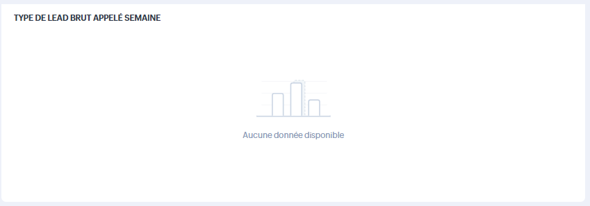
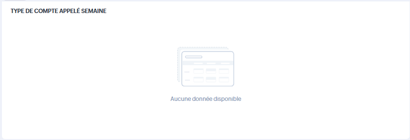

Trop de blocs sans données
Une part importante des widgets remonte "Aucune donnée disponible" ou aucun enregistrement.
Analyse des différentes vues d'accueil Zoho CRM : vendeur, classique, activités, acheteurs, pilotage et manager, avec focus sur la lisibilité, la disponibilité des données, les composants bloqués et la valeur réelle du dashboard.
Le module Accueil présente plusieurs vues selon les profils utilisateurs, mais l'ensemble donne une impression de dashboard partiellement vide, parfois peu exploitable, et inégal selon les contextes d'usage.
Une part importante des widgets remonte "Aucune donnée disponible" ou aucun enregistrement.
Un accueil peu alimenté réduit l'intérêt opérationnel du CRM pour les profils métier.
Certains composants sont peu lisibles, bloqués par des permissions, ou inutiles sans données.
Cette vue contient des éléments métier utiles, mais plusieurs blocs clés apparaissent vides ou peu exploitables, ce qui réduit fortement la valeur quotidienne de l'accueil vendeur.


La vue classique présente une structure standard de dashboard, mais plusieurs composants semblent soit vides, soit inaccessibles, soit alimentés par des données insuffisantes.
Mes tâches ouvertes, tri, aucun enregistrement, total à 0, mes réunions aujourd'hui, message d'autorisation refusée, pipeline par étape, données insuffisantes pour le graphique.
Cette vue donne l'impression d'un dashboard non fiabilisé : soit les rapports ne sont pas alimentés, soit les permissions ne sont pas alignées, soit les filtres de vue ne correspondent pas aux usages réels.
La présence de nombreuses vues de filtrage est intéressante, mais leur valeur dépend entièrement de la qualité des données et de la cohérence des règles d'affichage selon les profils.
La vue acheteurs semble conçue comme un cockpit métier, mais plusieurs tableaux à zéro affaiblissent sa fonction de suivi opérationnel.
ODJ achat récemment modifié, ordres de la semaine acheteurs, modèles recherchés par les vendeurs, calendrier achat, type de lead brut appelé semaine, type de compte appelé semaine, guide achat et présentation Auto Declic.
Cette vue est la plus sensible côté management, car elle doit transformer les activités CRM en indicateurs actionnables.
Temps et nombre d'appel aujourd'hui pour les prospects.
Tâches à échéance ce mois-ci pour les prospects.
Durée et nombre d'appel aujourd'hui pour les clients.
Noms des clients appelés, enseignes appelées, types de clients appelés aujourd'hui.
La vue manager est dense, riche en indicateurs, et potentiellement très utile, mais elle doit être priorisée dans l'audit pour distinguer les indicateurs fiables des widgets décoratifs ou vides.
Retro planning cliquable, aucune donnée disponible, affaires à vider en clôture ce mois-ci, appels en retard, tâches en retard, enrichissement SIRET gestionnaire achat, enrichissement SIRET gestionnaire des ventes, revenu ce mois, performances sur 4 trimestres, anomalies de création de leads, leads par source, tops affaires, tops comptes, pipeline par reps, top reps par revenu, top reps par tâches.
Les premières corrections doivent viser la fiabilité des données, la disponibilité réelle des widgets et la qualité de lecture des composants les plus utilisés.
Identifier pourquoi autant de composants affichent zéro donnée ou "Aucune donnée disponible".
Analyser les composants bloqués comme "Mes réunions aujourd'hui" et les modules masqués.
Contrôler les rapports alimentant les graphiques et les dashboards d'accueil.
Corriger l'expérience d'aperçu des documents WorkDrive et l'usage du plein écran.